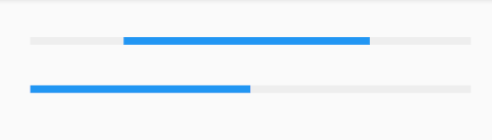
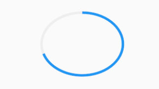

3.8 进度指示器¶
Material 组件库中提供了两种进度指示器：LinearProgressIndicator和CircularProgressIndicator，它们都可以同时用于精确的进度指示和模糊的进度指示。精确进度通常用于任务进度可以计算和预估的情况，比如文件下载；而模糊进度则用户任务进度无法准确获得的情况，如下拉刷新，数据提交等。
LinearProgressIndicator¶
LinearProgressIndicator是一个线性、条状的进度条，定义如下：
LinearProgressIndicator({
double value,
Color backgroundColor,
Animation<Color> valueColor,
...
})
value：value表示当前的进度，取值范围为[0,1]；如果value为null时则指示器会执行一个循环动画（模糊进度）；当value不为null时，指示器为一个具体进度的进度条。backgroundColor：指示器的背景色。valueColor: 指示器的进度条颜色；值得注意的是，该值类型是Animation<Color>，这允许我们对进度条的颜色也可以指定动画。如果我们不需要对进度条颜色执行动画，换言之，我们想对进度条应用一种固定的颜色，此时我们可以通过AlwaysStoppedAnimation来指定。
示例¶
// 模糊进度条(会执行一个动画)
LinearProgressIndicator(
backgroundColor: Colors.grey[200],
valueColor: AlwaysStoppedAnimation(Colors.blue),
),
//进度条显示50%
LinearProgressIndicator(
backgroundColor: Colors.grey[200],
valueColor: AlwaysStoppedAnimation(Colors.blue),
value: .5,
)
运行效果如图3-30所示：

第一个进度条在执行循环动画：蓝色条一直在移动，而第二个进度条是静止的，停在50%的位置。
CircularProgressIndicator¶
CircularProgressIndicator是一个圆形进度条，定义如下：
CircularProgressIndicator({
double value,
Color backgroundColor,
Animation<Color> valueColor,
this.strokeWidth = 4.0,
...
})
前三个参数和LinearProgressIndicator相同，不再赘述。strokeWidth 表示圆形进度条的粗细。示例如下：
// 模糊进度条(会执行一个旋转动画)
CircularProgressIndicator(
backgroundColor: Colors.grey[200],
valueColor: AlwaysStoppedAnimation(Colors.blue),
),
//进度条显示50%，会显示一个半圆
CircularProgressIndicator(
backgroundColor: Colors.grey[200],
valueColor: AlwaysStoppedAnimation(Colors.blue),
value: .5,
),
运行效果如图3-31所示：

第一个进度条会执行旋转动画，而第二个进度条是静止的，它停在50%的位置。
自定义尺寸¶
我们可以发现LinearProgressIndicator和CircularProgressIndicator，并没有提供设置圆形进度条尺寸的参数；如果我们希望LinearProgressIndicator的线细一些，或者希望CircularProgressIndicator的圆大一些该怎么做？
其实LinearProgressIndicator和CircularProgressIndicator都是取父容器的尺寸作为绘制的边界的。知道了这点，我们便可以通过尺寸限制类Widget，如ConstrainedBox、SizedBox （我们将在后面容器类组件一章中介绍）来指定尺寸，如：
// 线性进度条高度指定为3
SizedBox(
height: 3,
child: LinearProgressIndicator(
backgroundColor: Colors.grey[200],
valueColor: AlwaysStoppedAnimation(Colors.blue),
value: .5,
),
),
// 圆形进度条直径指定为100
SizedBox(
height: 100,
width: 100,
child: CircularProgressIndicator(
backgroundColor: Colors.grey[200],
valueColor: AlwaysStoppedAnimation(Colors.blue),
value: .7,
),
),
运行效果如图3-32所示：

注意，如果CircularProgressIndicator显示空间的宽高不同，则会显示为椭圆。如：
// 宽高不等
SizedBox(
height: 100,
width: 130,
child: CircularProgressIndicator(
backgroundColor: Colors.grey[200],
valueColor: AlwaysStoppedAnimation(Colors.blue),
value: .7,
),
),
运行效果如图3-33所示：

进度色动画¶
前面说过可以通过valueColor对进度条颜色做动画，关于动画我们将在后面专门的章节详细介绍，这里先给出一个例子，读者在了解了Flutter动画一章后再回过头来看。
我们实现一个进度条在3秒内从灰色变成蓝色的动画：
import 'package:flutter/material.dart';
class ProgressRoute extends StatefulWidget {
@override
_ProgressRouteState createState() => _ProgressRouteState();
}
class _ProgressRouteState extends State<ProgressRoute>
with SingleTickerProviderStateMixin {
AnimationController _animationController;
@override
void initState() {
//动画执行时间3秒
_animationController =
new AnimationController(vsync: this, duration: Duration(seconds: 3));
_animationController.forward();
_animationController.addListener(() => setState(() => {}));
super.initState();
}
@override
void dispose() {
_animationController.dispose();
super.dispose();
}
@override
Widget build(BuildContext context) {
return SingleChildScrollView(
child: Column(
children: <Widget>[
Padding(
padding: EdgeInsets.all(16),
child: LinearProgressIndicator(
backgroundColor: Colors.grey[200],
valueColor: ColorTween(begin: Colors.grey, end: Colors.blue)
.animate(_animationController), // 从灰色变成蓝色
value: _animationController.value,
),
);
],
),
);
}
}
自定义进度指示器样式¶
定制进度指示器风格样式，可以通过CustomPainter Widget 来自定义绘制逻辑，实际上LinearProgressIndicator和CircularProgressIndicator也正是通过CustomPainter来实现外观绘制的。关于CustomPainter，我们将在后面“自定义Widget”一章中详细介绍。
flutter_spinkit 包提供了多种风格的模糊进度指示器，读者若是感兴趣，可以参考。